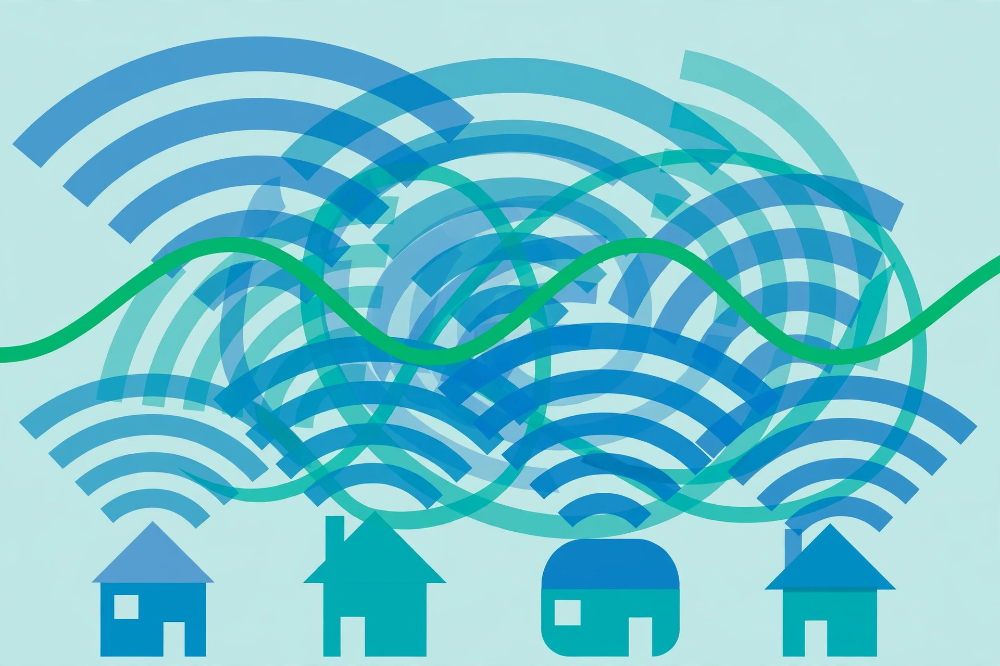

Wi-Fi channel interference & how to fix it

Wi-Fi is a shared medium: your router and your neighbors' routers all shout over the same radio frequencies. When too many networks use the same channel, they take turns — and your connection slows down even though nothing is "broken." The fix is picking a channel your neighbors aren't crowding. Here's how that works, band by band.
What a channel actually is
Each Wi-Fi band is a stretch of radio spectrum divided into channels. Think of a band as a hallway and channels as conversations inside it: two conversations can share a hallway if they're far enough apart, but neighbors talking over each other makes everything unintelligible. Your router picks a channel (often automatically, often badly), and everything you do online runs through it.
2.4 GHz: only three channels don't overlap
The 2.4 GHz band has about a dozen channels, but they're packed so tightly that most of them overlap. Only channels 1, 6, and 11 are fully non-overlapping — choosing any other channel means you're interfering with (and being interfered with by) your neighbors on two adjacent channels at once. This is why guides everywhere repeat 1, 6, and 11: overlapping channels create noise that corrupts data and triggers retransmissions, while same-channel neighbors at least politely take turns.
Practical steps: if your router lets you set the channel manually, look at which of 1, 6, or 11 your neighbors use least (a free Wi-Fi analyzer app on your phone shows this) and pick the emptiest. Keep the channel width at 20 MHz on 2.4 GHz — wider channels sound faster but overlap more neighbors, which usually makes things worse on this crowded band.
5 GHz: many more channels, different trade-offs
The 5 GHz band has roughly two dozen non-overlapping channels, so interference is a much smaller problem — apartments that are a war zone on 2.4 GHz are often peaceful on 5 GHz. Common starting points are channels 36, 40, 44, and 48, or the higher 149–165 range, depending on what's allowed in your region.
Some 5 GHz channels are shared with radar systems (these are called DFS channels). Routers on a DFS channel must vacate it if they detect radar, which can cause a brief dropout. Many consumer routers avoid DFS channels by default, which is why everyone crowds onto the same handful — if your router supports DFS and your area has no radar interference, those channels are often nearly empty.
On 5 GHz, wider channel widths (40 or 80 MHz) genuinely help when the spectrum is quiet, because wider channels carry more data. In a dense apartment building, narrower is still the safer choice.
6 GHz: the quiet new highway
If your router and devices support Wi-Fi 6E or newer, the 6 GHz band adds a large stretch of spectrum — about 1,200 MHz in regions that opened the full band — with no older devices in it at all. That means no legacy interference and plenty of wide channels. The trade-off: higher frequencies don't travel as far or penetrate walls as well, so 6 GHz is best in the same room as the router.
The fix, in order
- Use 5 GHz (or 6 GHz) whenever your device supports it — leave 2.4 GHz for smart-home gadgets and devices far from the router, since 2.4 GHz travels farther through walls.
- On 2.4 GHz, lock the channel to whichever of 1, 6, or 11 is least used around you, at 20 MHz width.
- Check that your router's "auto channel" feature isn't making things worse — some routers pick poorly or switch channels at annoying moments. If performance is inconsistent, manual selection usually wins.
- Re-scan after big changes: new neighbors move in, new routers appear. A channel that was perfect last year may be crowded today.
How to actually change the channel
- Install a Wi-Fi analyzer app. A free one on your phone shows every nearby network and which channel it's on. Stand near your router and look at the 2.4 GHz graph.
- Pick the emptiest of 1, 6, or 11. Only these three don't overlap on 2.4 GHz — choose the one with the fewest (and weakest) neighboring networks on it.
- Log into your router. On a computer or phone connected to your Wi-Fi, type 192.168.1.1 or 192.168.0.1 into a browser address bar (or use your router maker's app — check the router's label if neither address loads). The admin password is on the router's label unless you changed it.
- Find the wireless settings. Look for Wireless, WLAN, or Wi-Fi settings — then the 2.4 GHz section and a "Channel" or "Control Channel" dropdown. Change it from Auto to your chosen channel, and set the channel width to 20 MHz if you see that option.
- Save and wait. Save the settings; the router will usually restart itself. Wi-Fi will drop for a minute — that's normal.
- Re-scan and re-test. Open the analyzer app again and confirm your network is now on the channel you picked, then run a speed test during a normally busy time (evening) and compare to before.
What success looks like: the analyzer shows your network sitting on a quiet channel, and your busy-time speed test is noticeably better. If nothing changed, the problem is probably something else — run the ISP diagnosis to check.
Remember: channel changes only help with interference from other Wi-Fi networks. If your internet connection itself is slow, no channel change will fix it — see the ISP speed diagnosis guide first.